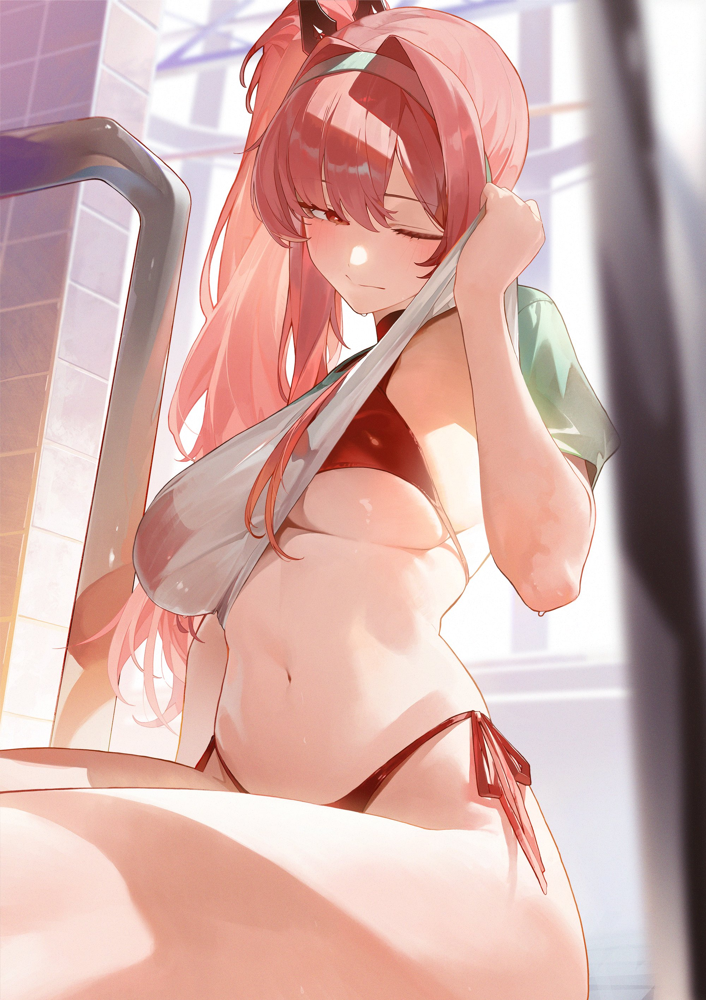

I'm Divyanshu, a video editor passionate about transforming ideas into engaging visual stories.
From cinematic edits and documentaries to YouTube content, I focus on creating videos that capture attention and leave a lasting impression.
My approach combines creativity, pacing, and attention to detail to craft edits that not only look good but also serve the story. Whether it's building atmosphere, enhancing emotion, or keeping viewers engaged, I enjoy finding the right visual language for every project.
When I'm not editing, I'm constantly exploring new techniques, studying storytelling, and experimenting with creative ways to bring ideas to life through video.
Software:
Kdenlive • DaVinci Resolve • A little Blender